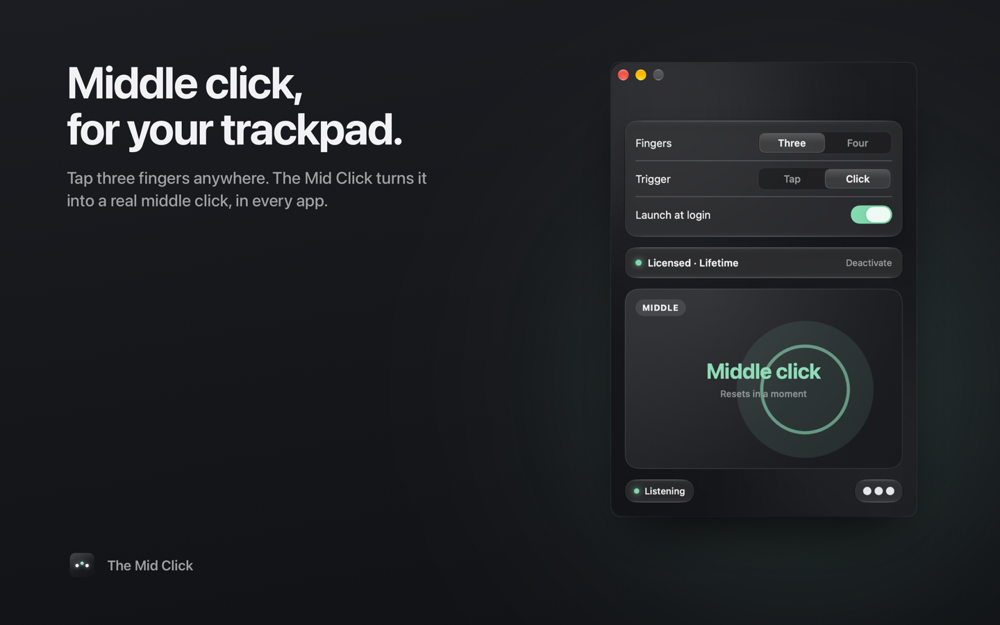

Middle click on a Mac trackpad
macOS has no built-in way to middle click from a trackpad. The Mid Click is a small macOS utility that turns a three-finger (or four-finger) trackpad tap or click into a standard middle mouse click, in every app.
Download for macOS 7-day free trial, then $1/year

- Works with
- Built-in MacBook trackpads and Magic Trackpad
- Gesture
- Three-finger tap, three-finger click, or four fingers of either
- Output
- A standard middle mouse button event (button 3), including middle-drag in Click mode
- Useful for
- Opening links in background tabs, closing browser tabs, orbiting in Blender and CAD, pasting in terminals, anything mapped to the middle button
- Permission
- Accessibility, used only to read trackpad touches and send the click. Why, and what it can't see
- Footprint
- Menu bar only, no Dock icon, two settings, no network use except license checks
How it works
- Download, unzip, move The Mid Click to Applications, open it.
- Grant Accessibility access when macOS asks. Here is exactly what that permission is used for.
- Tap the trackpad with three fingers. The test pad in the window reports "Middle click". That's it.
Choose Tap for speed or Click for a physical press that also supports middle-drag. Choose Three or Four fingers to avoid colliding with gestures you already use. Turn on Launch at login if you want it always on.
Pricing
Buy from inside the app and paste the license key it emails you. One license covers all the Macs you own.
Guides
How to middle click on a MacBook trackpad
Every option, from Cmd-click workarounds to a real middle button, and how to set it up.
Middle click in Safari, Chrome, Arc and Firefox
Open links in the background and close tabs with one tap.
Middle mouse button in Blender on a Mac
Orbit, pan and zoom from the trackpad without emulating a three-button mouse.
The Mid Click vs BetterTouchTool
When you want one gesture and when you want a hundred.
The Mid Click vs MiddleClick
The free open-source app, what changed on macOS 27, and why this one uses public APIs.
How middle click actually works on macOS
From the trackpad's touch frames to button 3, with the real event names.
Support
The app says "Not listening"
It needs Accessibility access. Open System Settings → Privacy & Security → Accessibility (on macOS 27 it's called Device Control and Data Access) and turn on The Mid Click. If it isn't listed, click the plus button and choose it from Applications.
Where is the app? I don't see a window
It lives in the menu bar as a three-dot icon and has no Dock icon. Click the icon and choose Open The Mid Click to change settings or test clicks.
Hiding or restoring the menu bar icon
Hold ⌘ and drag the icon off the menu bar to hide it; the app keeps working. To get the icon and window back, open The Mid Click from Applications.
Tap does nothing, but Click works
Taps must be short and still: three fingers down and up within about a third of a second without sliding. If you rest your fingers first, use Click mode instead.
Three-finger tap conflicts with another gesture
Switch to four fingers in the app, or change the conflicting gesture in System Settings → Trackpad. The usual culprit is "Look up & data detectors" set to "Tap with three fingers".
I bought a license but it says trial
Click "Enter key" in the app and paste the key from your purchase email. A key can be moved between Macs with Deactivate.
Something else
Email davletovalmir@gmail.com with your macOS version and what you expected to happen.